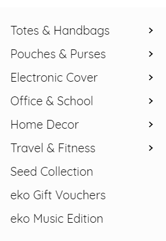

Be The Change. Take Part In The Solution. Make A Difference.
We accept 4 types of waste plastic:
- Polythene
- grocery plastic bags
- Multilayered wrappers of cookies
- chips
- detergents
- Glittery gifts wrappers
- Old audio and video cassette tapes
- Apart from these, we also accept bread packets, foam (hilton), transperant plastiG,amazon/ flipkart/myntra/plastic packets.
Ecokaari does NOT accept?
- Milk/ Oil PacketsThey are greasy and need large amount of hot water to clean.
- Small Sachets and StrawsThey are very small in size and hence dithcult to weave in Hard Plastic Eco Bricks, Tetra Packs, Pet bottles, CD's
Things to be taken care of:
- Make sure the bags are CLEAN without any in gering food material or any other waste inside.
- (Kindly wash it with soap and water or a wet cloth)
- DO NOT rip open or cut the corners (triangular).
- Always make a straight cut.
You can donate your household waste plastic at our Pune office.
no. 69, Tarang,
Swedganga Society,
Internal canal road,
Warje, Pune - 4058 ecokaari.org
Let’s Talk or WhatsApp or Text at:
CALL1
CALL2
CALL3 (WhatsApp Business)
Email 1 Email 2
For quick response connect us on our social media pages! Facebook Instagram LinkedIn Twitter
Store Timings:
New timings (due to covid19) - 09:00 am 06:00 pm (IST).
Monday Saturday (Sunday and Public Holidays Closed).
We are following strict safety and social distancing norms for your safety and that of our team.
Please call before visiting!
We DO NOT have any collection centres or a pickup service. Donations can be dropped off or couriered to the above address. in ecokaari
no. 69, Tarang,
Swedganga Society,
Internal canal road,
Warje, Pune - 4058 ecokaari.org
Let’s Talk or WhatsApp or Text at:
CALL1
CALL2
CALL3 (WhatsApp Business)
Email 1 Email 2
For quick response connect us on our social media pages! Facebook Instagram LinkedIn Twitter
Store Timings:
New timings (due to covid19) - 09:00 am 06:00 pm (IST).
Monday Saturday (Sunday and Public Holidays Closed).
We are following strict safety and social distancing norms for your safety and that of our team.
Please call before visiting!
We DO NOT have any collection centres or a pickup service. Donations can be dropped off or couriered to the above address. in ecokaari
Please watch the below video for detailed information about plastic donation:
